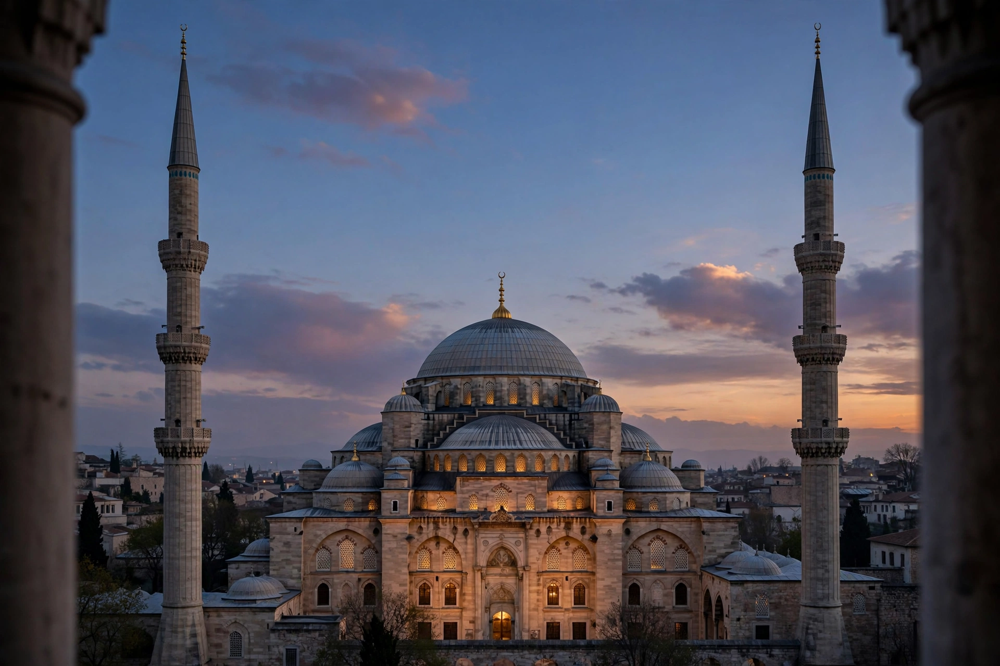

Minaret
From Wikipedia, the free encyclopedia

A minaret is a tower, typically part of or adjacent to a Mosque, from which the Muezzin calls the faithful to prayer (Adhan). Minarets also serve as landmarks of Islamic presence and identity. Their forms vary strikingly by region and era — the spiral Malwiya of Samarra, square Maghrebi towers, slender Ottoman 'pencils', the twin minarets of Mughal tombs — and the tallest, at the Hassan II Mosque in Casablanca, rises 210 metres.
Origins and functions
The earliest mosques had no minarets; the call was given from a roof. Towers appeared under the Umayyads (the minarets of the Damascus mosque adapted Roman watchtowers) and spread with the Seljuks, whose brick towers in Iran pioneered the form. Beyond the call (now usually by loudspeaker), minarets marked the mosque in the skyline, embodied patrons' prestige and, in frontier lands, signalled Islamic rule.
Styles and engineering
Regional schools are unmistakable: the square stone shafts of North Africa and al-Andalus (La Giralda of Seville began as a minaret), the balconied şerefe rings of Ottoman minarets, the fluted brick towers of Central Asia (Kalyan Minaret, Bukhara, 1127 — also infamous as an execution drop), and modern reinterpretations in glass and steel. Earthquake-prone regions repeatedly rebuilt them; slender Ottoman minarets are engineered to sway.
Controversy
In some Western countries minarets have become symbols in debates over Islam's public presence — Switzerland banned new minarets by referendum in 2009 (four existed), a vote widely criticised by human-rights bodies and never replicated as law elsewhere in Europe.